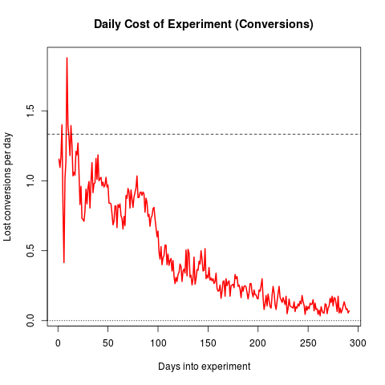

应用： 该如何去做？¶
模拟
- run examples/simple_run
测试单个策略的表现
- run examples/experiment_run.py
比较多个策略的表现，并能方便地图画呈现结果
使用场景
代替A/B测
- A/B 偏向于理解，MAB偏向于优化
- 减小实验成本

- 适用于探索和开发的时间较短的场景，例如头条，短期促销等
- 广告（物品）推荐
- 例如，采用 epsilon greedy ，每次以一个小概率随机从候选中选择广告展现，大概率选择CTR最高的展现，增加多样性
用户兴趣探测
工具包
问题
- 一次选择多臂
推荐的场景中，
延迟反馈
- Linear Upper Confidence Bound Algorithm for Contextual Bandit Problem with Piled Rewards